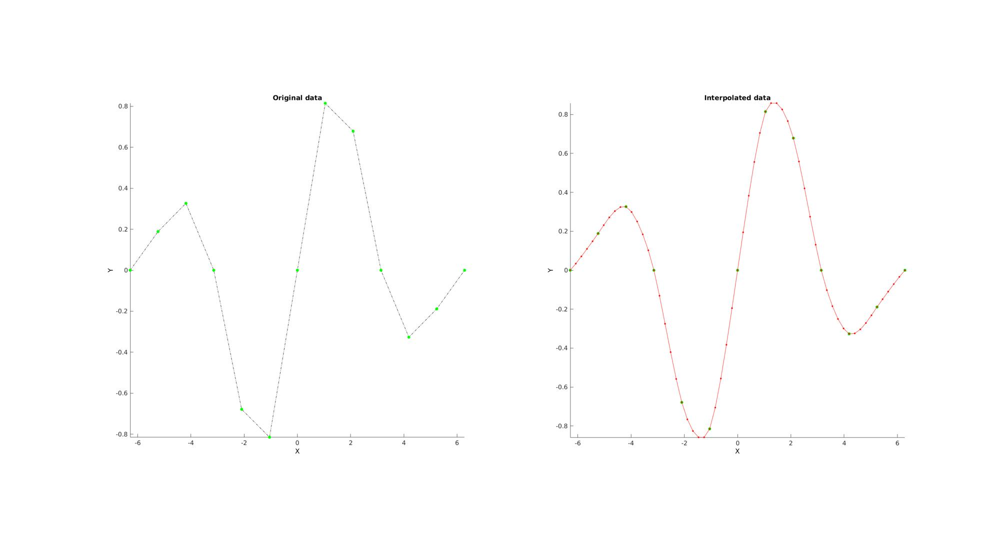
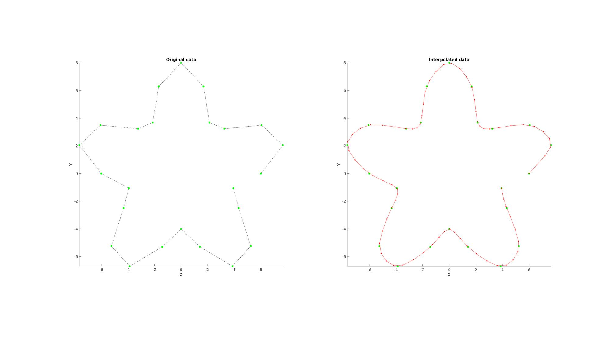
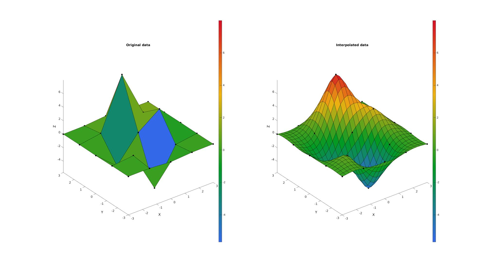
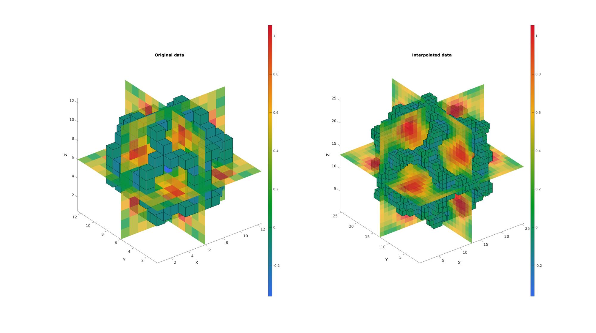

biharmonicSplineInterpolation
Below is a demonstration of the features of the biharmonicSplineInterpolation function
Contents
clear; close all; clc;
Syntax
[VI]=biharmonicSplineInterpolation(X,V,XI);
Description
The biharmonicSplineInterpolation function is an expansion to n-dimensions and scattered data of the biharmonic spline interpolation method of the griddata function (method 'v4'). The examples are for 1D up to 3D (providing for straightforward visualization) but the function operates on ND data as well. This type of interpolation does not require gridded data and is therefore suitable for scattered data. It also does not require a tesselation. A downside of this method is the
Reference: David T. Sandwell, Biharmonic spline interpolation of GEOS-3 and SEASAT altimeter data, Geophysical Research Letters, 2, 139-142, 1987.
Examples
Plot settings
figStruct.Visible='on';
fontSize=15;
markerSize1=25;
cMap=gjet(250);
Example: 1D Interpolation
Below is an example for 1D curve interpolation
n=13; x=linspace(-2*pi,2*pi,n); y=exp( -0.5.*(x.^2./3.^2) ).*sin(x); ni=n+4*(n-1); xi=linspace(min(x(:)),max(x(:)),ni); yi=biharmonicSplineInterpolation(x,y,xi);
Visualizing results
cFigure(figStruct); subplot(1,2,1); title('Original data','FontSize',fontSize); xlabel('X','FontSize',fontSize); ylabel('Y','FontSize',fontSize); zlabel('Z','FontSize',fontSize) hold on; plot(x,y,'k-.'); plot(x,y,'g.','MarkerSize',markerSize1); axis tight; axis vis3d; grid off; set(gca,'FontSize',fontSize); subplot(1,2,2); title('Interpolated data','FontSize',fontSize); xlabel('X','FontSize',fontSize); ylabel('Y','FontSize',fontSize); zlabel('Z','FontSize',fontSize) hold on; plot(x,y,'g.','MarkerSize',markerSize1); plot(xi,yi,'r.-','MarkerSize',markerSize1/2); axis tight; axis vis3d; grid off; set(gca,'FontSize',fontSize); drawnow;
Example: Parametric curve interpolation
Below is an example for curve interpolation using a parametric representation
%Simulating a complex curve
n=25;
t=linspace(0,2*pi,n);
t=t(1:end-1);
r=6+2.*sin(5*t);
x=r.*cos(t);
y=r.*sin(t);
ni=n*3;
ti=linspace(min(t(:)),max(t(:)),ni);
xi=biharmonicSplineInterpolation(t,x,ti);
yi=biharmonicSplineInterpolation(t,y,ti);
Visualizing results
cFigure(figStruct); subplot(1,2,1); title('Original data','FontSize',fontSize); xlabel('X','FontSize',fontSize); ylabel('Y','FontSize',fontSize); zlabel('Z','FontSize',fontSize) hold on; plot(x,y,'k-.'); plot(x,y,'g.','MarkerSize',markerSize1); axis tight; axis vis3d; grid off; set(gca,'FontSize',fontSize); subplot(1,2,2); title('Interpolated data','FontSize',fontSize); xlabel('X','FontSize',fontSize); ylabel('Y','FontSize',fontSize); zlabel('Z','FontSize',fontSize) hold on; plot(x,y,'g.','MarkerSize',markerSize1); plot(xi,yi,'r.-','MarkerSize',markerSize1/2); axis tight; axis vis3d; grid off; set(gca,'FontSize',fontSize); drawnow;
Example: 2D Interpolation
Below is an example for surface interpolation
n=5; [X,Y,Z]=peaks(n); [F,V,C]=surf2patch(X,Y,Z,Z); XX=[X(:) Y(:)]; ni=25; [XI,YI]=ndgrid(linspace(min(X(:)),max(X(:)),ni),linspace(min(Y(:)),max(Y(:)),ni)); XXI=[XI(:) YI(:)]; ZI=biharmonicSplineInterpolation(XX,Z,XXI); ZI=reshape(ZI,size(XI)); [FI,VI,CI]=surf2patch(XI,YI,ZI,ZI);
Visualizing results
cFigure(figStruct); subplot(1,2,1); title('Original data','FontSize',fontSize); xlabel('X','FontSize',fontSize); ylabel('Y','FontSize',fontSize); zlabel('Z','FontSize',fontSize) hold on; plotV(V,'k.','MarkerSize',markerSize1); hs=patch('Faces',F,'Vertices',V,'EdgeColor','k', 'CData',C,'FaceColor','flat'); view(3); axis tight; axis vis3d; grid off; set(gca,'FontSize',fontSize); colormap(cMap); colorbar; subplot(1,2,2); title('Interpolated data','FontSize',fontSize); xlabel('X','FontSize',fontSize); ylabel('Y','FontSize',fontSize); zlabel('Z','FontSize',fontSize) hold on; plotV(V,'k.','MarkerSize',markerSize1); hs=patch('Faces',FI,'Vertices',VI,'EdgeColor','k', 'CData',CI,'FaceColor','flat'); view(3); axis tight; axis vis3d; grid off; set(gca,'FontSize',fontSize); colormap(cMap); colorbar; drawnow;
Example: 3D Interpolation
Below is an example for 3D (i.e. an image) interpolation
n=12; [X,Y,Z]=meshgrid(linspace(-4.77,4.77,n)); phi=(1+sqrt(5))/2; M=1/6*(2 - (cos(X + phi*Y) + cos(X - phi*Y) + cos(Y + phi*Z) + cos(Y - phi*Z) + cos(Z - phi*X) + cos(Z + phi*X))); XX=[X(:) Y(:) Z(:)]; ni=25; [XI,YI,ZI]=ndgrid(linspace(min(X(:)),max(X(:)),ni),linspace(min(Y(:)),max(Y(:)),ni),linspace(min(Z(:)),max(Z(:)),ni)); XXI=[XI(:) YI(:) ZI(:)]; MI=biharmonicSplineInterpolation(XX,M,XXI); MI=reshape(MI,size(XI));
Visualizing results
cFigure(figStruct); subplot(1,2,1); title('Original data','FontSize',fontSize); xlabel('X','FontSize',fontSize); ylabel('Y','FontSize',fontSize); zlabel('Z','FontSize',fontSize) hold on; % Setting up indices for I direction slices S=round(size(M,1)./2); %Selection of middle slice L_plot=false(size(M)); L_plot(S,:,:)=1; IND=find(L_plot); [F,V,C]=ind2patch(IND,M,'si'); %Creating patch data for y mid-voxel slices hs=patch('Faces',F,'Vertices',V,'EdgeColor','none', 'CData',C,'FaceColor','flat','FaceAlpha',0.75); % Setting up indices for J direction slices S=round(size(M,2)./2); %Selection of middle slice L_plot=false(size(M)); L_plot(:,S,:)=1; IND=find(L_plot); [F,V,C]=ind2patch(IND,M,'sj'); %Creating patch data for x mid-voxel slices hs=patch('Faces',F,'Vertices',V,'EdgeColor','none', 'CData',C,'FaceColor','flat','FaceAlpha',0.75); % Setting up indices for K direction slices S=round(size(M,3)./2); %Selection of middle slice L_plot=false(size(M)); L_plot(:,:,S)=1; IND=find(L_plot); [F,V,C]=ind2patch(IND,M,'sk'); %Creating patch data for z mid-voxel slices hs=patch('Faces',F,'Vertices',V,'EdgeColor','none', 'CData',C,'FaceColor','flat','FaceAlpha',0.75); % Setting up indices for voxels to plot L_mask=M>-0.2 & M<0; [F,V,C]=ind2patch(L_mask,M,'vb'); %Creating patch data for selection of high voxels hs=patch('Faces',F,'Vertices',V,'EdgeColor','k', 'CData',C,'FaceColor','flat','FaceAlpha',1); colormap(cMap); colorbar; caxis([min(M(:)) max(M(:))]); view(3); axis tight; axis vis3d; grid off; set(gca,'FontSize',fontSize); subplot(1,2,2); title('Interpolated data','FontSize',fontSize); xlabel('X','FontSize',fontSize); ylabel('Y','FontSize',fontSize); zlabel('Z','FontSize',fontSize) hold on; % Setting up indices for I direction slices S=round(size(MI,1)./2); %Selection of middle slice L_plot=false(size(MI)); L_plot(S,:,:)=1; IND=find(L_plot); [F,V,C]=ind2patch(IND,MI,'si'); %Creating patch data for y mid-voxel slices hs=patch('Faces',F,'Vertices',V,'EdgeColor','none', 'CData',C,'FaceColor','flat','FaceAlpha',0.75); % Setting up indices for J direction slices S=round(size(MI,2)./2); %Selection of middle slice L_plot=false(size(MI)); L_plot(:,S,:)=1; IND=find(L_plot); [F,V,C]=ind2patch(IND,MI,'sj'); %Creating patch data for x mid-voxel slices hs=patch('Faces',F,'Vertices',V,'EdgeColor','none', 'CData',C,'FaceColor','flat','FaceAlpha',0.75); % Setting up indices for K direction slices S=round(size(MI,3)./2); %Selection of middle slice L_plot=false(size(MI)); L_plot(:,:,S)=1; IND=find(L_plot); [F,V,C]=ind2patch(IND,MI,'sk'); %Creating patch data for z mid-voxel slices hs=patch('Faces',F,'Vertices',V,'EdgeColor','none', 'CData',C,'FaceColor','flat','FaceAlpha',0.75); % Setting up indices for voxels to plot L_mask=MI>-0.2 & MI<0; [F,V,C]=ind2patch(L_mask,MI,'vb'); %Creating patch data for selection of high voxels hs=patch('Faces',F,'Vertices',V,'EdgeColor','k', 'CData',C,'FaceColor','flat','FaceAlpha',1); colormap(cMap); colorbar; caxis([min(M(:)) max(M(:))]); view(3); axis tight; axis vis3d; grid off; set(gca,'FontSize',fontSize); drawnow;

GIBBON www.gibboncode.org
Kevin Mattheus Moerman, gibbon.toolbox@gmail.com
GIBBON footer text
License: https://github.com/gibbonCode/GIBBON/blob/master/LICENSE
GIBBON: The Geometry and Image-based Bioengineering add-On. A toolbox for image segmentation, image-based modeling, meshing, and finite element analysis.
Copyright (C) 2019 Kevin Mattheus Moerman
This program is free software: you can redistribute it and/or modify it under the terms of the GNU General Public License as published by the Free Software Foundation, either version 3 of the License, or (at your option) any later version.
This program is distributed in the hope that it will be useful, but WITHOUT ANY WARRANTY; without even the implied warranty of MERCHANTABILITY or FITNESS FOR A PARTICULAR PURPOSE. See the GNU General Public License for more details.
You should have received a copy of the GNU General Public License along with this program. If not, see http://www.gnu.org/licenses/.